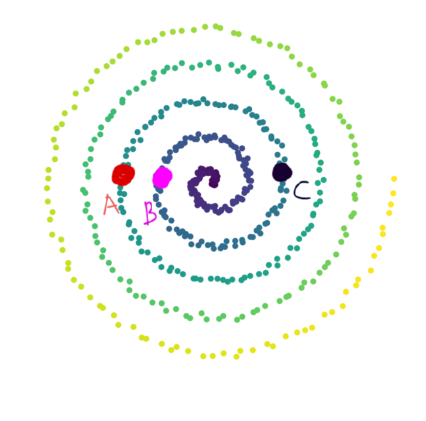
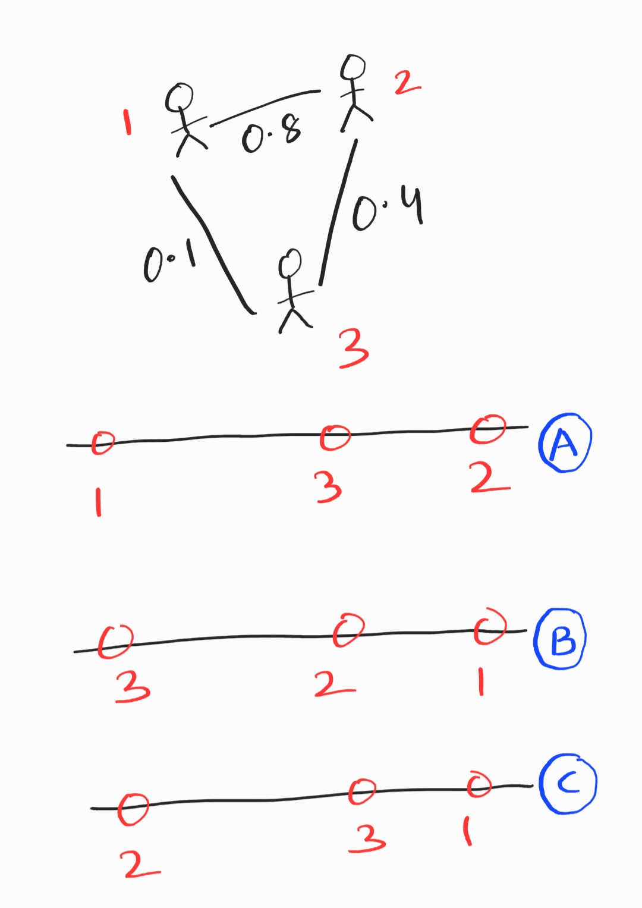
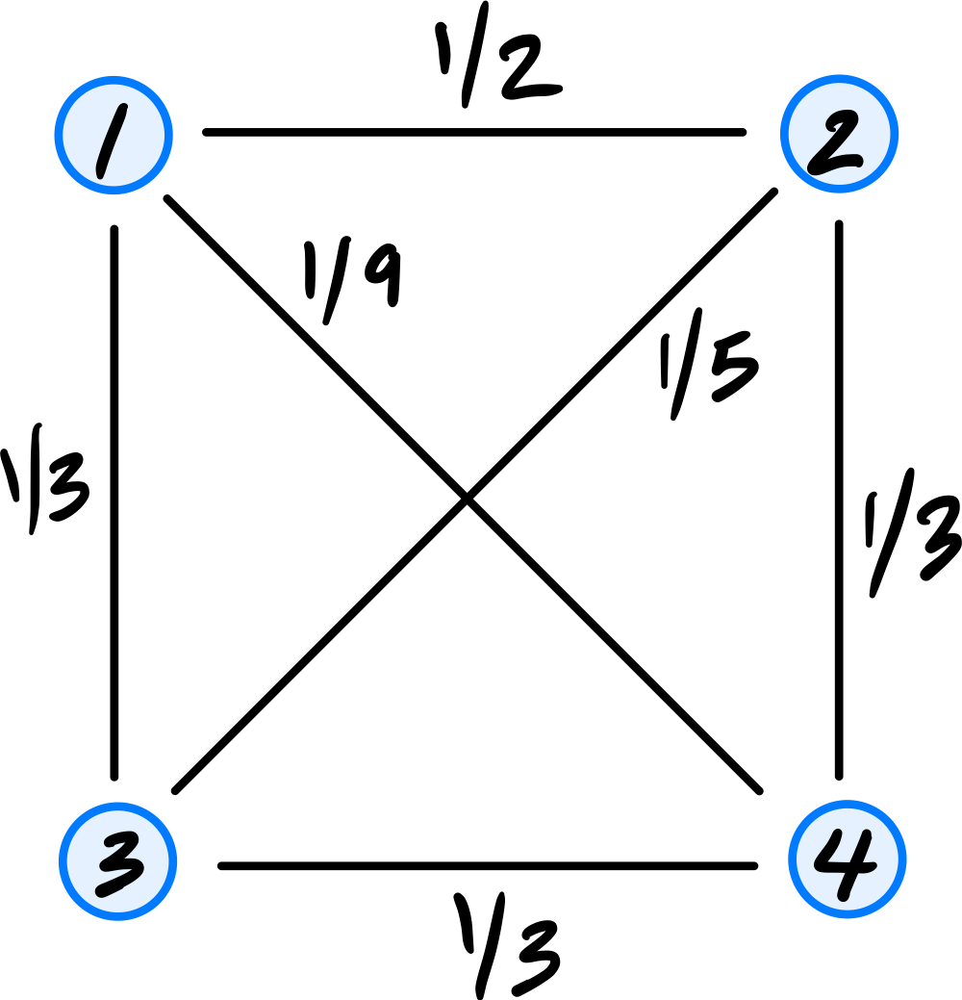
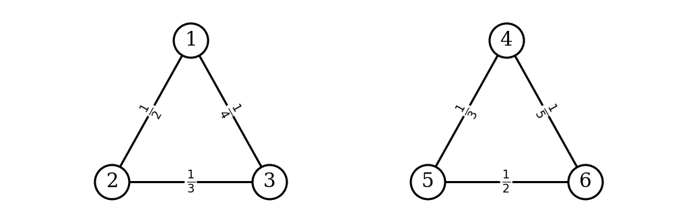
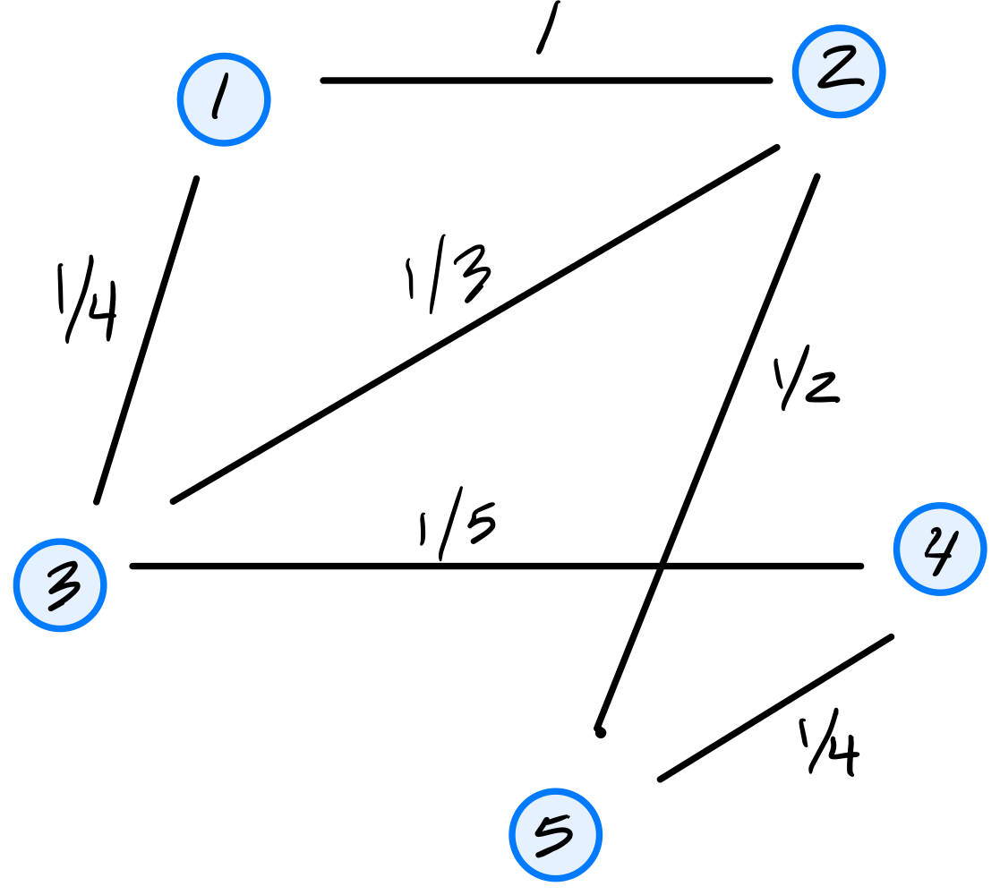

Problems tagged with "lecture-08"
Problem #093
Tags: laplacian eigenmaps, dimensionality reduction, quiz-05, lecture-08
Consider a bunch of data points plotted in \(\mathbb{R}^2\) as shown in the image below. We observe that the data lies along a 1-dimensional manifold.
Define \(d_{\text{geo}}(\vec x, \vec y)\) as the geodesic distance between two points. Consider 3 points, \(A\), \(B\), \(C\) marked in the image.

Part 1)
True or False: \(d_{\text{geo}}(A, B) > d_{\text{geo}}(B, C)\).
Solution
True.
Geodesic distance is the distance along the manifold. If we start walking along the 1-dimensional manifold, starting from the center of the spiral, \(B\) comes first, followed by \(C\) and \(A\). Therefore, \(A\) is farther from \(B\) than \(C\) is from \(B\) along the manifold.
Part 2)
True or False: \(d_{\text{geo}}(A, C) > d_{\text{geo}}(A, B)\).
Solution
False.
Along the manifold, the order of the points (starting from the center) is \(B\), \(C\), \(A\). Since \(C\) is between \(B\) and \(A\), the geodesic distance from \(A\) to \(C\) is less than the geodesic distance from \(A\) to \(B\).
Problem #094
Tags: laplacian eigenmaps, quiz-05, optimization, lecture-08
Define the cost function to be:
Consider the similarity matrix with \(n = 3\):
Which of the following embedding vectors \(\vec f\) leads to the minimum cost?
Solution
\((1, 1, 1)^T\).
When \(f_i = f_j\) for all \(i, j\), the term inside the summation is always \(0\), leading the value of the cost function to be \(0\). This is the minimum possible value of the cost function, since all terms in the sum are non-negative.
Problem #095
Tags: laplacian eigenmaps, quiz-05, lecture-08
Given a similarity matrix \(W\) between 3 users:
Create a degree matrix \(D\) from \(W\). What is the value of \(D_{22}\)(the entry in the 2nd row, 2nd column)?
Solution
\(2.4\).
The degree matrix \(D\) is a diagonal matrix where \(D_{ii} = \sum_j W_{ij}\). For \(D_{22}\), we sum the entries of the second row of \(W\):
Problem #096
Tags: laplacian eigenmaps, quiz-05, lecture-08
Consider the similarity matrix:
Find the Graph Laplacian \(L = D - W\). What is the value of \(L_{12}\)(the entry in the 1st row, 2nd column)?
Solution
\(-0.5\).
The Graph Laplacian is \(L = D - W\). Since \(D\) is a diagonal matrix, \(D_{12} = 0\). The similarity \(W_{12} = 0.5\). Therefore:
Problem #097
Tags: lecture-08, laplacian eigenmaps, quiz-05, eigenvalues, eigenvectors
Given a \(4 \times 4\) Graph Laplacian matrix \(L\), the 4 (eigenvalue, eigenvector) pairs of this matrix are given as \((3, \vec v_1)\), \((0, \vec v_2)\), \((8, \vec v_3)\), \((14, \vec v_4)\).
You need to pick one eigenvector. Which of the above eigenvectors will be a non-trivial solution to the spectral embedding problem?
Solution
\(\vec v_1\).
The embedding is the eigenvector with the smallest eigenvalue that is strictly greater than \(0\). The eigenvector \(\vec v_2\) corresponds to eigenvalue \(0\), which gives the trivial solution (all embeddings equal). Among the remaining eigenvectors, \(\vec v_1\) has the smallest eigenvalue (\(3\)), so it is the non-trivial solution to the spectral embedding problem.
Problem #098
Tags: laplacian eigenmaps, quiz-05, lecture-08
Consider a weighted graph of similarity between 3 users. Edges determine the level of similarity between two users (0: least similar, 1: most similar).

Which option is the best embedding representation for the three users?
Solution
B.
Users 2 and 1 are most similar (highest edge weight), and so they should be closest in the embedding. This makes option B the best choice.
Problem #099
Tags: symmetric matrices, laplacian eigenmaps, quiz-05, lecture-08
True or False: Given a symmetric similarity matrix \(W\), the Graph Laplacian matrix \(L\) will always be symmetric.
Solution
True.
Since \(D\) is a diagonal matrix (and therefore symmetric), and \(W\) is symmetric by assumption, the Graph Laplacian \(L = D - W\) is the difference of two symmetric matrices, which is always symmetric.
Problem #100
Tags: laplacian eigenmaps, quiz-05, lecture-08
Consider the similarity graph shown below.

Part 1)
What is the (1,3) entry of the graph's (unnormalized) Laplacian matrix?
Solution
\(-1/4\).
The Laplacian matrix is \(L = D - W\), where \(W\) is the similarity (adjacency) matrix and \(D\) is the diagonal degree matrix. For off-diagonal entries, \(L_{ij} = -W_{ij}\). Since the weight of the edge between nodes 1 and 3 is \(1/4\), the \((1,3)\) entry of \(L\) is \(-1/4\).
Part 2)
Consider the embedding vector \(\vec f = (1, 2, -1, 4, 8)^T\). What is the cost of this embedding with respect to the Laplacian eigenmaps cost function?
Solution
\(32\).
The cost is \(\displaystyle\text{Cost}(\vec f) = \frac{1}{2}\sum_{i=1}^{n}\sum_{j=1}^{n} w_{ij}(f_i - f_j)^2 = \vec f^T L \vec f\).
If we look at a single edge \((i,j)\) with weight \(w_{ij}\), its contribution to the cost is \(w_{ij}(f_i - f_j)^2\). Thus, we can compute the cost by summing the contributions of all edges in the graph. They are:
The double sum counts each edge twice (once as \((i,j)\) and once as \((j,i)\)), so the \(\frac{1}{2}\) cancels this overcounting, giving \(1 + 1 + 3 + 18 + 5 + 4 = 32\).
Problem #101
Tags: quiz-05, laplacian eigenmaps, eigenvectors, lecture-08
Suppose \(L\) is a graph's Laplacian matrix and let \(\vec f\) be a (nonzero) embedding vector whose embedding cost is zero according to the Laplacian eigenmaps cost function.
True or False: \(\vec f\) is an eigenvector of \(L\).
Solution
True.
If the embedding cost is zero, then \(\vec{f}^T L \vec{f} = 0\). Since \(L\) is positive semidefinite, this implies \(L \vec{f} = \vec{0}\). This means \(\vec{f}\) is an eigenvector of \(L\) with eigenvalue \(0\).
Problem #102
Tags: quiz-05, laplacian eigenmaps, eigenvectors, lecture-08
Suppose a graph \(G\) with nodes \(u_1, \ldots, u_5\) is embedded into \(\mathbb R^2\) using Laplacian Eigenmaps. The bottom three eigenvectors of the graph's Laplacian matrix and their corresponding eigenvalues are:
What is the embedding of node 2?
Solution
\((0, -\frac{2}{\sqrt{6}})^T\).
In Laplacian Eigenmaps, we embed into \(\mathbb{R}^2\) using the eigenvectors corresponding to the two smallest nonzero eigenvalues: \(\vec{u}^{(2)}\)(with \(\lambda_2 = 2\)) and \(\vec{u}^{(3)}\)(with \(\lambda_3 = 5\)). We skip \(\vec{u}^{(1)}\) since it corresponds to \(\lambda_1 = 0\).
The embedding of node \(i\) is \((u^{(2)}_i, u^{(3)}_i)^T\). For node 2 (the second entry of each eigenvector):
Problem #103
Tags: laplacian eigenmaps, quiz-05, lecture-08
Consider the similarity graph shown below.

Part 1)
What is the (1,4) entry of the graph's (unnormalized) Laplacian matrix?
Solution
\(-1/9\).
The Laplacian matrix is \(L = D - W\). For off-diagonal entries, \(L_{ij} = -W_{ij}\). Since the weight of the edge between nodes 1 and 4 is \(1/9\), the \((1,4)\) entry of \(L\) is \(-1/9\).
Part 2)
Consider the embedding vector \(\vec f = (1, 7, 7, -2)^T\). What is the cost of this embedding with respect to the Laplacian eigenmaps cost function?
Solution
\(85\).
The cost is \(\displaystyle\text{Cost}(\vec f) = \frac{1}{2}\sum_{i=1}^{n}\sum_{j=1}^{n} w_{ij}(f_i - f_j)^2 = \vec f^T L \vec f\).
If we look at a single edge \((i,j)\) with weight \(w_{ij}\), its contribution to the cost is \(w_{ij}(f_i - f_j)^2\). Thus, we can compute the cost by summing the contributions of all edges in the graph. They are:
The double sum counts each edge twice (once as \((i,j)\) and once as \((j,i)\)), so the \(\frac{1}{2}\) cancels this overcounting, giving \(18 + 12 + 1 + 0 + 27 + 27 = 85\).
Problem #104
Tags: laplacian eigenmaps, quiz-05, lecture-08
Consider the similarity graph shown below. The weight of each edge is shown; the weight of non-existing edges is zero.

Is \(\vec f = (3, 3, 3, -2, -2, -2)^T\) an eigenvector of the graph's Laplacian matrix? If so, what is its eigenvalue?
Solution
Yes, \(\vec f\) is an eigenvector of the Laplacian with eigenvalue \(\lambda = 0\).
To verify, we could\(L \vec f\) and check that it is \(\vec 0\), but there's an easier way to see this.
The vector \(\vec f\) assigns the same value to nodes \(\{1, 2, 3\}\) and another same value to nodes \(\{4, 5, 6\}\). This means that it is embedding all of the nodes in the first connected component to the same point, and all of the nodes in the second connected component to another same point.
When we think of the cost of this embedding with respect to the Laplacian Eigenmaps cost function, we see that the cost is zero. This is because any term where \(W_{ij} > 0\) comes from two nodes in the same connected component, and for them \(f_i = f_j\), so \((f_i - f_j)^2 = 0\). For any pair of nodes, one in the first component and one in the second, \(W_{ij} = 0\), so they do not contribute to the cost, no matter what their \(f\) values are.
Since the cost is zero, we have \(\vec f^T L \vec f = 0\). This implies that \(L \vec f = \vec 0\), so \(\vec f\) is an eigenvector of \(L\) with eigenvalue \(\lambda = 0\).
This will happen any time we have an unweighted graph with multiple connected components: there will be multiple eigenvectors with eigenvalue \(0\), each corresponding to an embedding that assigns a different constant value to each connected component.
Problem #105
Tags: laplacian eigenmaps, quiz-05, lecture-08
Consider the similarity graph shown below.

Part 1)
What is the (2,2) entry of the graph's (unnormalized) Laplacian matrix?
Solution
\(11/6\).
The Laplacian matrix is \(L = D - W\), where \(W\) is the similarity (adjacency) matrix and \(D\) is the diagonal degree matrix. For diagonal entries, \(L_{ii} = d_i\), the degree of node \(i\). Node 2 is connected to nodes 1, 3, and 5 with weights \(1\), \(1/3\), and \(1/2\), respectively, so \(d_2 = 1 + 1/3 + 1/2 = 11/6\).
Part 2)
Consider the embedding vector \(\vec f = (3, 0, -3, 2, 6)^T\). What is the cost of this embedding with respect to the Laplacian eigenmaps cost function?
Solution
\(48\).
The cost is \(\displaystyle\text{Cost}(\vec f) = \frac{1}{2}\sum_{i=1}^{n}\sum_{j=1}^{n} w_{ij}(f_i - f_j)^2 = \vec f^T L \vec f\).
If we look at a single edge \((i,j)\) with weight \(w_{ij}\), its contribution to the cost is \(w_{ij}(f_i - f_j)^2\). Thus, we can compute the cost by summing the contributions of all edges in the graph. They are:
The double sum counts each edge twice (once as \((i,j)\) and once as \((j,i)\)), so the \(\frac{1}{2}\) cancels this overcounting, giving \(9 + 9 + 3 + 18 + 5 + 4 = 48\).
Problem #106
Tags: laplacian eigenmaps, quiz-05, lecture-08
Consider the similarity graph shown below.

Part 1)
What is the (3,4) entry of the graph's (unnormalized) Laplacian matrix?
Solution
\(-1/5\).
The Laplacian matrix is \(L = D - W\), where \(W\) is the similarity (adjacency) matrix and \(D\) is the diagonal degree matrix. For off-diagonal entries, \(L_{ij} = -W_{ij}\). Since the weight of the edge between nodes 3 and 4 is \(1/5\), the \((3,4)\) entry of \(L\) is \(-1/5\).
Part 2)
Consider the embedding vector \(\vec f = (2, 3, 0, 5, -1)^T\). What is the cost of this embedding with respect to the Laplacian eigenmaps cost function?
Solution
\(27\).
The cost is \(\displaystyle\text{Cost}(\vec f) = \frac{1}{2}\sum_{i=1}^{n}\sum_{j=1}^{n} w_{ij}(f_i - f_j)^2 = \vec f^T L \vec f\).
If we look at a single edge \((i,j)\) with weight \(w_{ij}\), its contribution to the cost is \(w_{ij}(f_i - f_j)^2\). Thus, we can compute the cost by summing the contributions of all edges in the graph. They are:
The double sum counts each edge twice (once as \((i,j)\) and once as \((j,i)\)), so the \(\frac{1}{2}\) cancels this overcounting, giving \(1 + 1 + 3 + 8 + 5 + 9 = 27\).
Problem #107
Tags: quiz-05, laplacian eigenmaps, eigenvectors, lecture-08
Suppose a graph \(G\) with nodes \(u_1, \ldots, u_5\) is embedded into \(\mathbb R^2\) using Laplacian Eigenmaps. The bottom three eigenvectors of the graph's Laplacian matrix and their corresponding eigenvalues are:
What is the embedding of node 4?
Solution
\((-\frac{1}{\sqrt{2}}, \frac{1}{\sqrt{6}})^T\).
In Laplacian Eigenmaps, we embed into \(\mathbb{R}^2\) using the eigenvectors corresponding to the two smallest nonzero eigenvalues: \(\vec{u}^{(2)}\)(with \(\lambda_2 = 3\)) and \(\vec{u}^{(3)}\)(with \(\lambda_3 = 7\)). We skip \(\vec{u}^{(1)}\) since it corresponds to \(\lambda_1 = 0\).
The embedding of node \(i\) is \((u^{(2)}_i, u^{(3)}_i)^T\). For node 4 (the fourth entry of each eigenvector):